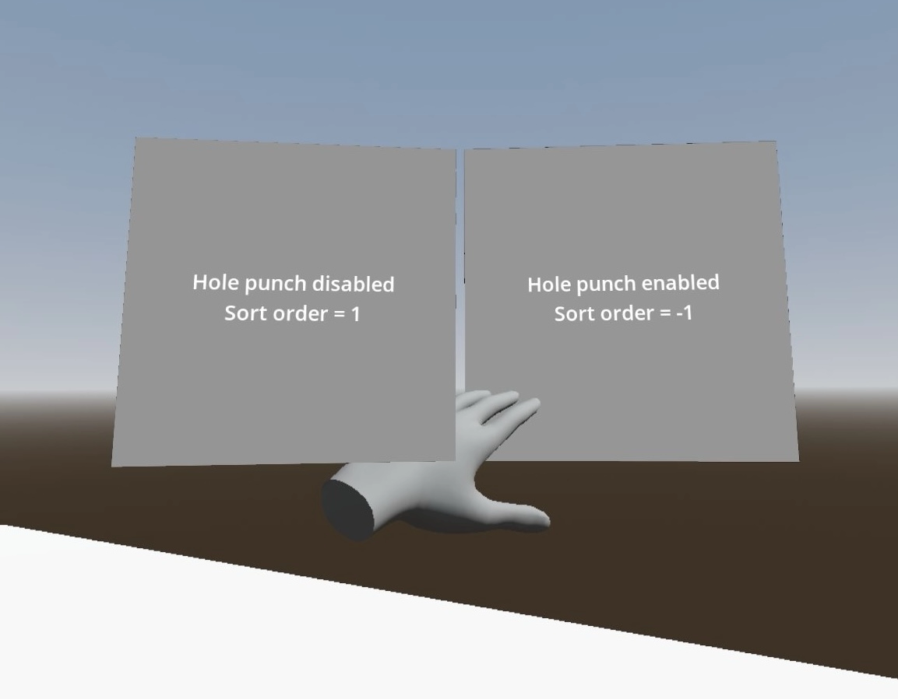

Composition layer trong OpenXR
Giới thiệu
Trong game XR, bạn thường muốn tạo các tương tác người dùng diễn ra trong không gian 3D, nơi người dùng chạm vào đồ vật như thể đang chạm vào chúng ngoài đời thực.
Tuy nhiên, đôi khi việc tạo một giao diện 2D truyền thống hơn là không thể tránh khỏi. Nhưng trong XR, bạn không thể chỉ thêm các thành phần 2D vào scene. Godot cần thông tin chiều sâu để định vị đúng các phần tử này sao cho chúng xuất hiện ở vị trí thoải mái với người dùng. Ngay cả khi có thông tin chiều sâu, vẫn có những kính có màn hình đặt nghiêng khiến pipeline 2D tiêu chuẩn không thể kết xuất chính xác các phần tử 2D.
Giải pháp là kết xuất UI vào một SubViewport và hiển thị kết quả bằng một ViewportTexture trên một mesh 3D. QuadMesh là lựa chọn phù hợp cho việc này.
Ghi chú
Xem dự án mẫu GUI in 3D để có ví dụ về cách tiếp cận này.
Vấn đề khi hiển thị viewport theo cách này là kết quả kết xuất bị XR runtime lấy mẫu lại để bù méo thấu kính, và sự suy giảm chất lượng đi kèm có thể khiến chữ trên UI khó đọc.
OpenXR đưa ra giải pháp cho vấn đề này thông qua composition layer. Với composition layer, nội dung của một viewport có thể được chiếu lên một bề mặt sau bước bù méo thấu kính, cho ra kết quả cuối cùng chất lượng cao hơn nhiều.
Ghi chú
Vì không phải XR runtime nào cũng hỗ trợ mọi loại composition layer, Godot triển khai một giải pháp dự phòng, trong đó viewport được kết xuất như một phần của scene thông thường nhưng chịu các hạn chế về chất lượng đã nêu ở trên.
Cảnh báo
Khi composition layer được hỗ trợ, chính XR runtime sẽ hiển thị subviewport. Điều này có nghĩa là UI chỉ hiển thị trong kính, Godot không truy cập được nó và do đó nó sẽ không xuất hiện khi bạn dùng chế độ xem của người quan sát (spectator view) trên máy tính.
Hiện có 3 node cung cấp chức năng này:
OpenXRCompositionLayerCylinder hiển thị nội dung của SubViewport ở mặt trong của một hình trụ (hoặc một "lát" của hình trụ).
OpenXRCompositionLayerEquirect hiển thị nội dung của SubViewport ở mặt trong của một hình cầu (hoặc một "lát" của hình cầu).
OpenXRCompositionLayerQuad hiển thị nội dung của SubViewport trên một hình chữ nhật phẳng.
Thiết lập SubViewport
Bước đầu tiên là thêm một SubViewport cho UI 2D; việc này không cần bước đặc biệt nào. Trong ví dụ, chúng ta đánh dấu viewport là trong suốt.
Giờ bạn có thể tạo UI 2D bằng cách thêm các node con vào SubViewport như bình thường. Bạn nên lưu UI 2D trong một scene con (subscene) để việc bố trí layout dễ dàng hơn.

Cảnh báo
Chế độ cập nhật "When Visible" sẽ không hoạt động vì Godot không thể xác định viewport có đang hiển thị với người dùng hay không. Khi gán viewport cho một composition layer, Godot sẽ tự động điều chỉnh cài đặt này.
Thêm composition layer
Bước thứ hai là thêm composition layer. Chúng ta có thể thêm node composition layer phù hợp làm node con của node XROrigin3D. Điều này rất quan trọng vì XR runtime định vị mọi thứ tương đối với origin.
Chúng ta muốn đặt composition layer ở ngang tầm mắt và cách người chơi khoảng 1 đến 1,5 mét.
Giờ chúng ta gán SubViewport cho thuộc tính Layer Viewport và bật Alpha Blend.

Ghi chú
Vì người chơi có thể đi ra xa điểm origin, bạn sẽ muốn định vị lại composition layer khi người chơi căn giữa lại góc nhìn (recenter). Dùng reference space Local Floor sẽ tự động áp dụng logic này.
Làm cho giao diện hoạt động
Đến giờ chúng ta mới chỉ hiển thị UI; để nó hoạt động, chúng ta cần thêm code. Trong ví dụ này, chúng ta sẽ giữ mọi thứ đơn giản và cho một trong hai tay cầm hoạt động như con trỏ. Sau đó chúng ta sẽ mô phỏng các thao tác chuột bằng con trỏ này.
Đoạn code này cũng yêu cầu một node MeshInstance3D tên Pointer được thêm làm node con của node OpenXRCompositionLayerQuad. Chúng ta cấu hình một SphereMesh với bán kính 0.01 mét. Chúng ta sẽ dùng nó làm công cụ hỗ trợ để hiển thị nơi người dùng đang trỏ tới.
Hàm chính điều khiển chức năng này là hàm intersects_ray trên node composition layer. Hàm này nhận vị trí và hướng toàn cục của con trỏ và trả về tọa độ UV nơi tia cắt viewport. Nó trả về Vector2(-1.0, -1.0) nếu chúng ta không trỏ vào viewport.
Chúng ta bắt đầu bằng việc thiết lập một số biến; quan trọng ở đây là các biến export xác định node tay cầm mà chúng ta dùng để trỏ vào màn hình.
extends OpenXRCompositionLayerQuad
const NO_INTERSECTION = Vector2(-1.0, -1.0)
@export var controller : XRController3D
@export var button_action : String = "trigger_click"
var was_pressed : bool = false
var was_intersect : Vector2 = NO_INTERSECTION
...
Tiếp theo, chúng ta định nghĩa một hàm hỗ trợ nhận giá trị trả về từ intersects_ray và cho ta vị trí toàn cục của điểm giao đó. Bản triển khai này chỉ hoạt động với node OpenXRCompositionLayerQuad.
...
func _intersect_to_global_pos(intersect : Vector2) -> Vector3:
if intersect != NO_INTERSECTION:
var local_pos : Vector2 = (intersect - Vector2(0.5, 0.5)) * quad_size
return global_transform * Vector3(local_pos.x, -local_pos.y, 0.0)
else:
return Vector3()
...
Chúng ta cũng định nghĩa một hàm hỗ trợ nhận giá trị intersect và trả về vị trí của ta trong hệ tọa độ cục bộ của viewport:
...
func _intersect_to_viewport_pos(intersect : Vector2) -> Vector2i:
if layer_viewport and intersect != NO_INTERSECTION:
var pos : Vector2 = intersect * Vector2(layer_viewport.size)
return Vector2i(pos)
else:
return Vector2i(-1, -1)
...
Logic chính nằm trong hàm _process. Ở đây, chúng ta bắt đầu bằng cách ẩn con trỏ, sau đó kiểm tra xem có tay cầm và viewport hợp lệ không, rồi gọi intersects_ray với vị trí và hướng của tay cầm:
...
# Called every frame. 'delta' is the elapsed time since the previous frame.
func _process(_delta):
# Hide our pointer, we'll make it visible if we're interacting with the viewport.
$Pointer.visible = false
if controller and layer_viewport:
var controller_t : Transform3D = controller.global_transform
var intersect : Vector2 = intersects_ray(controller_t.origin, -controller_t.basis.z)
...
Tiếp theo, chúng ta kiểm tra xem có đang giao với viewport không. Nếu có, chúng ta kiểm tra nút có đang được nhấn không và đặt con trỏ tại điểm giao.
...
if intersect != NO_INTERSECTION:
var is_pressed : bool = controller.is_button_pressed(button_action)
# Place our pointer where we're pointing
var pos : Vector3 = _intersect_to_global_pos(intersect)
$Pointer.visible = true
$Pointer.global_position = pos
...
Nếu ở lần gọi process trước chúng ta đã giao với viewport và con trỏ đã di chuyển, chúng ta chuẩn bị một đối tượng InputEventMouseMotion để mô phỏng chuột di chuyển và gửi nó đến viewport để xử lý tiếp.
...
if was_intersect != NO_INTERSECTION and intersect != was_intersect:
# Pointer moved
var event : InputEventMouseMotion = InputEventMouseMotion.new()
var from : Vector2 = _intersect_to_viewport_pos(was_intersect)
var to : Vector2 = _intersect_to_viewport_pos(intersect)
if was_pressed:
event.button_mask = MOUSE_BUTTON_MASK_LEFT
event.relative = to - from
event.position = to
layer_viewport.push_input(event)
...
Nếu vừa thả nút, chúng ta cũng chuẩn bị một đối tượng InputEventMouseButton để mô phỏng việc thả nút và gửi nó đến viewport để xử lý tiếp.
...
if not is_pressed and was_pressed:
# Button was let go?
var event : InputEventMouseButton = InputEventMouseButton.new()
event.button_index = 1
event.pressed = false
event.position = _intersect_to_viewport_pos(intersect)
layer_viewport.push_input(event)
...
Hoặc nếu vừa nhấn nút, chúng ta chuẩn bị một đối tượng InputEventMouseButton để mô phỏng việc nhấn nút và gửi nó đến viewport để xử lý tiếp.
...
elif is_pressed and not was_pressed:
# Button was pressed?
var event : InputEventMouseButton = InputEventMouseButton.new()
event.button_index = 1
event.button_mask = MOUSE_BUTTON_MASK_LEFT
event.pressed = true
event.position = _intersect_to_viewport_pos(intersect)
layer_viewport.push_input(event)
...
Tiếp theo, chúng ta ghi nhớ trạng thái cho frame kế tiếp.
...
was_pressed = is_pressed
was_intersect = intersect
...
Cuối cùng, nếu không giao với viewport, chúng ta xóa trạng thái.
...
else:
was_pressed = false
was_intersect = NO_INTERSECTION
Hole punching
Vì composition layer được ghép (composite) lên trên kết quả kết xuất, nó có thể bị vẽ đè lên trước các đối tượng thực ra nằm phía trước viewport.
Khi bật hole punch, bạn yêu cầu Godot kết xuất một đối tượng trong suốt tại nơi viewport được hiển thị. Việc này được thực hiện theo cách ghi vào depth buffer và xóa kết quả kết xuất hiện tại. Mọi thứ phía sau viewport giờ sẽ bị xóa, còn mọi thứ phía trước viewport sẽ được kết xuất như bình thường.
Bạn cũng cần đặt Sort Order thành giá trị âm; khi đó XR compositor sẽ vẽ viewport trước, rồi phủ kết quả kết xuất của chúng ta lên trên.

Trường hợp minh họa bàn tay người dùng bị composition layer che khuất sai khi không dùng hole punching.